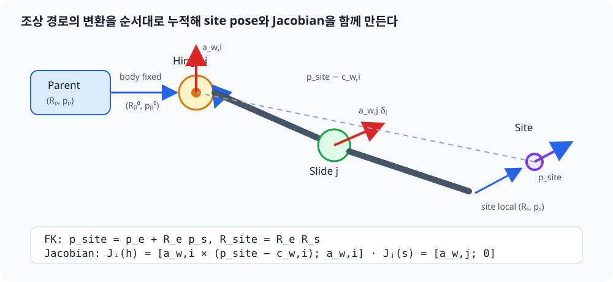

src/kinematics.py: 기구학과 충돌 거리¶
단일 팔 IK와 전신 IK가 함께 사용하는 공용 계산 계층이다. 컴파일된 MJCF에서 body–joint–site 트리를 만들고, 이 트리에서 site의 world pose와 Jacobian을 직접 계산한다. 충돌 geometry의 signed distance와 변화율만 현재 MuJoCo 물리 상태를 사용한다.
이 계산이 실시간 전신 IK와 legacy 단일 팔 DLS에서 어떻게 사용되는지는 Part 6 — 전신 IK와 단일 팔 DLS IK에서 연결해 설명한다.
언제 이 파일을 보는가¶
- 손 pose 또는 Jacobian 값이 예상과 다를 때
- quaternion 부호 때문에 orientation error가 튈 때
- collision 선이나 CBF gradient가 실제 geometry와 맞지 않을 때
- live simulation을 바꾸지 않는 FK 계산이 필요할 때
앱의 명령 선택이나 solver weight는 이 파일의 책임이 아니다. 전신 task 조립과 bound는
whole_body_ik.py, UI 좌표계는
teleop_targets.py가 담당한다.
공개 데이터 구조¶
| 타입 | 내용 |
|---|---|
KinematicBody |
부모 body id, 고정 position/quaternion, 소속 joint id |
KinematicJoint |
body id, 종류 이름, 축·원점, qpos/dof 주소, range |
KinematicSite |
소속 body id와 body-local position/quaternion |
KinematicTree |
컴파일된 MJCF에서 복사한 불변 body–joint–site 트리 |
SiteKinematics |
world position, 정규화 quaternion, 6×N geometric Jacobian |
CollisionPair |
감시할 두 geometry id, 표시 이름, 거리 계산 mode |
CollisionConstraint |
signed distance, controlled-DOF gradient, 두 최근접점 |
하나의 Site 계산 경로¶
KinematicsSolver.forward(q, context_qpos=None)가 IK와 Whole-Body IK의 실제 계산
경로이자 유일한 site 기구학 경로다. MjData나 MuJoCo의 forward/Jacobian solver를
호출하지 않고, 파싱한 트리를 직접 순회해 다음 값을 반환한다.
앱의 초기 home 기준 pose, FK→IK 모드 전환, rigid-grasp 캡처, 전신 IK 반복도 모두
WholeBodyIK.site_state()를 통해 이 경로를 사용한다. 런타임 제어 코드가
data.site_xpos나 data.site_xmat을 우회해서 읽지 않도록 회귀 테스트가 AST로
검사한다. 앱 초기화와 캔 reset에서도 mj_forward()를 호출하지 않는다. MuJoCo의
파생 동역학·접촉 상태는 정상적인 다음 mj_step()에서 갱신된다.
position shape (3,) world position
quaternion shape (4,) MuJoCo 순서 (w, x, y, z)
jacobian shape (6,N) [translation; rotation], world-aligned
KinematicsSolver는 생성 시 받은 joint_names 순서로 Jacobian 열을 만든다. 목표
site의 조상 경로에 없는 관절은 그
site를 움직일 수 없으므로 해당 열은 정확히 0이다. qpos 주소와 Jacobian의 DOF
열 주소는 일반적으로 다른 개념이므로 트리에 둘 다 보관한다.
MJCF를 트리로 만드는 과정¶
KinematicsSolver.from_mjcf(path, site_name, joint_names)는 다음 순서로 동작한다.
flowchart LR
X["MJCF 파일<br>include · default 포함"] --> M["MjModel 컴파일<br>MJCF 규칙 해석"]
M --> T["KinematicTree<br>body · joint · site 복사"]
T --> P["world → target site<br>조상 body 경로 캐시"]
P --> F["NumPy FK · Jacobian"]
F --> I["DLS IK 반복"]XML을 임의로 다시 해석하지 않고 MuJoCo 컴파일 결과를 입력으로 쓰는 이유는
include, default, 각도 단위 같은 MJCF 규칙을 그대로 존중하기 위해서다. 하지만
컴파일 뒤의 FK·Jacobian·IK 반복에는 MuJoCo runtime state가 개입하지 않는다. 앱은
이미 만든 MjModel에서 KinematicTree(model)을 한 번 생성해 양손 solver가 공유한다.
현재 자체 FK가 지원하는 가동 관절은 이 로봇 경로에 실제로 있는 scalar hinge와
slide다. 목표 site의 조상 경로에 ball 또는 free joint가 있으면 조용히 틀린
값을 만들지 않고 NotImplementedError를 낸다.
트리는 계산뿐 아니라 GUI 탐색에도 같은 구조를 제공한다. children_by_body는 body의
자식 body id, sites_by_body는 body에 붙은 site id, site_paths는 world에서 각
site body까지의 경로다. teleop_ui.py의 Kinematic Tree 창은 이
세 인덱스를 그대로 읽으므로 화면의 계층과 solver가 계산하는 계층이 달라지지 않는다.
FK 변환을 생략 없이 전개¶
부모 body의 world pose를 \((R_p,p_p)\), MJCF에 저장된 고정 body 변환을 부모 좌표계 기준 \((R_b^0,p_b^0)\)라고 하자. 먼저 관절이 움직이기 전 body pose는
로 계산한다. joint의 body-local 축을 \(a\), body-local 회전 중심을 \(r\), 현재 관절값을 \(q\), MJCF 기준값을 \(q_0\)라 두면 실제 변위는
이다. 이때 world 축과 world 회전 중심은 각각
이다.
Slide joint¶
slide는 회전 없이 world 축 방향으로 이동하므로
이다.
Hinge joint¶
축 \(a\), 각도 \(\delta\)의 Rodrigues 회전행렬을 \(R_a(\delta)\)라 하면
이다. body 회전은
가 된다. 회전 중심 \(c_w\)가 움직이지 않아야 하므로 \(c_w=p_b'+R_b'r\)이고, 이를 \(p_b'\)에 대해 한 단계씩 풀면
이다. 구현의 position = anchor_world - rotation @ joint.position이 바로 마지막
식이다.
모든 조상 body와 joint를 위 순서로 누적한 결과를 \((R_e,p_e)\), site의 body-local 고정 변환을 \((R_s,p_s)\)라 하면 최종 site pose는
이다.

기하 Jacobian을 트리에서 직접 만드는 과정¶
FK 중 각 관절의 \(a_w\)와 \(c_w\)를 저장했다. 작은 joint 속도와 site twist의 관계는
이다. slide joint \(i\)는 축 방향 병진만 만들므로 그 열은
이다. hinge joint \(i\)는 각속도 \(a_{w,i}\dot q_i\)를 만들고, 회전 중심에서 site까지의 벡터가 \(p_{site}-c_{w,i}\)이므로 선속도는 외적으로
가 된다. 따라서 Jacobian 열은
이다. 이 열들을 joint_names 순서로 옆에 붙이면 6×N geometric Jacobian이 된다.
Quaternion 처리¶
normalize_quaternion()은 입력을 단위 quaternion으로 만들고 스칼라 성분이 음수면
전체 부호를 뒤집는다. 유효하지 않거나 norm이 거의 0인 입력은 identity quaternion으로
대체한다.
shortest_orientation_error(target, current)는 다음 순서로 world-frame 최단 회전
벡터를 만든다.
- 두 quaternion을 정규화한다.
- 내적이 음수면 target 부호를 뒤집어 같은 회전의 가까운 표현을 선택한다.
target × inverse(current)의 상대 회전을 구한다.- axis-angle의 3차원 회전 벡터로 변환한다.
자체 기하 Jacobian의 회전 열도 world 축으로 구성되므로, 이 world-frame 오차를 별도 좌표 변환 없이 IK task에 사용할 수 있다.
Collision distance 계산 흐름¶
flowchart LR
P["CollisionPair"] --> M{"pair.mode"}
M -->|geom| G["mj_geomDistance<br>최근접점과 signed distance"]
M -->|table_top| T["table top support point"]
M -->|bounding_sphere| B["보수적 sphere distance"]
G --> J["KinematicTree.point_jacobian<br>두 점의 직접 Jacobian"]
T --> J
B --> J
J --> D["distance gradient<br>nᵀ(Jb-Ja)"]
D --> C["CollisionConstraint"]일반 geometry 쌍은 mj_geomDistance()의 최근접점을 사용한다. 두 점을 잇는 단위
법선 \(n\)과 각 점의 translational Jacobian으로 다음 gradient를 계산한다.
여기서 MuJoCo가 제공하는 것은 거리 \(d\)와 두 최근접점 \(p_A,p_B\)뿐이다.
KinematicTree.point_jacobian()은 각 점이 붙은 body의 조상 관절을 다시 순회한다.
점 \(p\)에 대한 열도 site와 같은 방식으로 직접 만든다.
따라서 collision gradient에도 MuJoCo Jacobian solver가 개입하지 않는다.

이 값은 “제어 속도 qdot이 현재 거리를 얼마나 빠르게 바꾸는가”를 뜻한다.
그림의 \(\dot d>0\)은 분리, \(\dot d<0\)은 접근을 의미한다. whole_body_ik.py는
이 gradient를 collision CBF의 한 행으로 사용한다.
특수 거리 mode¶
| mode | 사용하는 경우 | 이유 |
|---|---|---|
geom |
대부분의 mesh/primitive 쌍 | 실제 MuJoCo 최근접점 사용 |
table_top |
palm box와 table top | 일부 convex query의 불연속적인 0 거리 회피 |
bounding_sphere |
palm과 palm | feature 전환에 민감하지 않은 보수적 거리 |
특수 mode는 모든 geometry를 근사하는 일반 대체물이 아니다. 불연속이 확인된 제한된 쌍에만 사용한다.
기본 collision pair 구성¶
default_collision_pairs(model)는 먼저 collision-enabled geometry를 body별로 한 번
인덱싱한 뒤 다음 pair를 만든다.
- 양팔 사이의 link/palm 조합(고정된 shoulder link 제외)
- 같은 팔에서 충분히 떨어진 비인접 link 조합
- 팔과 base/lift/상체/head 조합
- 팔·palm과 table 조합
wheel-floor, finger-object, can 접촉은 의도된 물리 상호작용이므로 제외한다. pair의 선택 범위를 바꿀 때는 성능뿐 아니라 “원래 허용해야 하는 접촉을 막지 않는가”를 함께 검토해야 한다.
상태를 바꾸지 않는 기구학¶
flowchart LR
Q["후보 controlled q"] --> V["tree.qpos0 또는<br>context_qpos 복사본"]
C["선택적 context_qpos"] --> V
V --> B["관절 range clamp"]
B --> F["조상 tree 변환 누적"]
F --> R["pose + 6×N Jacobian"]context_qpos는 lift처럼 해당 solver가 직접 풀지 않지만 site chain에 영향을 주는
관절을 실제 상태와 맞추는 입력이다. solver는 이 배열도 먼저 복사하므로 호출자의
live data.qpos를 바꾸지 않는다. shape가 다르면 즉시 ValueError를 내며 제어
관절은 range 안으로 clamp한다.
호출 관계¶
| 호출자 | 사용하는 기능 |
|---|---|
ik.py |
기존 InverseKinematics 이름을 KinematicsSolver에 연결 |
whole_body_ik.py |
공유 KinematicTree의 양손 pose/Jacobian, collision distance gradient |
teleop_targets.py |
site_state() 결과로 home position/quaternion 기준 설정 |
teleop_app.py |
FK→IK 전환 시 site_state()로 현재 손 pose를 target에 복사 |
teleop_render.py |
solver가 반환한 collision 진단을 화면에 표시 |
teleop_ui.py |
body–joint–site 구조와 현재 joint 값을 Kinematic Tree 창에 표시 |
test_whole_body.py |
gradient 유한차분, pair scope, read-only 성질 검증 |
변경 후 검증¶
특히 collision 계산을 바꿨다면 distance 값만 보지 말고 중앙 유한차분과 analytic gradient가 일치하는지, 멀리 있는 pair에서 기존 command가 변하지 않는지도 확인한다.